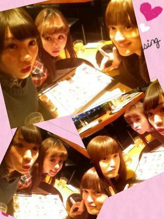
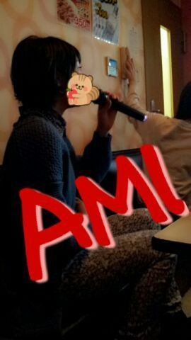

ほっほーい♪
Rottyやで (／・▽・)／ わおっ !
今日から ５枚目のアンダー曲♪
のlesson開始☆です (・▽・)
明日も明後日も... あるでぃ。
チョオーップ ! !
ほんでほんで、
「まひろっていったい
どんな系統の顔なんや(・ゞ・)?」
ってゆう疑問に対しての
皆様からのコメント読んでたら、
童顔 ゆう人、
大人っぽいゆう人
どっちもやゆう人
色々やったなあ*´▽`*
でも動物はだいたい
小動物系が多かったです (・ω・)
よくリスっぽいって
言われてたんやけど
皆様からの意見も
ろってぃは、リスみたい♪
ってのが多かったよん。
なんだか リスって言われるのは
やっぱ嬉しいなぁ〃ω〃
後、犬と猫も多かった。
子犬とかビーグル犬の赤ちゃんとか
小さい頃とかよく言われてたなん♪
たくさんのコメント
ありがとうございますん♪
昨日日曜日は、
スーパーウルトラ仲良しの
ろてぃー& せちゃん& あみ
で 楽しい時間を過ごしましたでぃ。
わ〜〜ぃ ヾ(*´∇｀*)ノ
スパゲティ選んでるところん♪

三枚とも載せたくて
まとめちゃた (・▽・)))てへ
ちなみに 『ごえもん』って所だよ／
有名だよね 〃▽〃
久々 パスタ食べに行って
嬉しいキモチっ(／ >▽<)／
すんごく美味しかた美味しかた。
その前に、２時間だけ
カラオケで歌ってきましたw
めっちゃ楽しかった...笑
あっとゆうまやん(／ ´▽`)
せっちゃんなんか
時間きとんのに最後いっきに入れて
ちょっと歌っては消して
ちょっと歌っては消して...
歌い足りてへんのかーーい
♪(^▽^* )＼(--;)
あみも のりのりや♪
『難しい英語も韓国語も
余裕だぜえっ(`・▽・)☆』
って感じで 間違っても
何も間違ってないかの様に
普通に歌いよるのが面白い ( ^з^)☆

奥にせちゃんもおった ! !
あwwww
あれだね、あれだよねっ*^^*
昨日、乃木どこで
まひろ 『フレンズ』
うたってたよぉ〜〜＼(^o^)／
嬉しかったな...(〃▽〃)
どうたったかなあ?
次週も オンエアされます様に...^^
ではでは、
明日も１日頑張ろうね ／
大好きー
おやすみなさい...のし(´・ω・`)